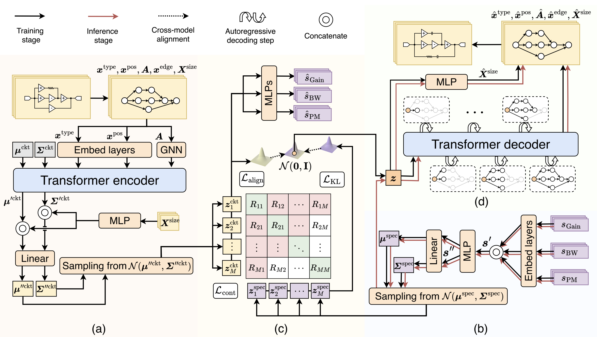

CktGen: Automated Analog Circuit Design with Generative Artificial Intelligence
TL;DR
CktGen reformulates analog circuit synthesis as a specification-conditioned generation task. Instead of re-optimizing every new target from scratch, it learns to generate candidate circuits directly from desired specifications and further improves them through test-time optimization.
Figure 1. CktGen framework. Top: joint representation learning aligns specifications and circuits in a shared latent space. Bottom: test-time optimization searches for high-quality circuits under target constraints.
Abstract
Automated analog circuit synthesis remains challenging because design specifications vary significantly across application scenarios. Most existing methods treat synthesis as fixed-target optimization, which limits flexibility when specifications change. CktGen addresses this issue by recasting analog circuit synthesis as a specification-conditioned generation problem. It learns a shared latent space for circuits and specifications, preserves the one-to-many mapping between targets and valid circuit realizations, and supports test-time optimization without retraining. Experiments on Open Circuit Benchmark datasets show strong gains in specification accuracy and practical automated design performance.
Overview
The core motivation behind CktGen is that analog design targets are not fixed. Gain, bandwidth, and phase margin change across applications, and the same specification may correspond to multiple valid circuit implementations. This makes a pure optimization-based view unnecessarily restrictive.
CktGen therefore treats circuit synthesis as conditional generation: given a target specification, the model directly generates candidate circuits. Instead of attaching specifications as weak side information, it explicitly aligns specification representations and circuit representations in a joint latent space so that the generated outputs stay tied to the requested design goals.
On top of generation, CktGen also performs test-time optimization. Once feasible latent regions are identified for a target specification, a multi-armed bandit strategy explores promising candidates and improves their FoM while maintaining specification satisfaction.
Method
CktGen combines a Transformer-based circuit encoder, a specification encoder, cross-modal latent alignment, and an autoregressive decoder into one conditional generative framework.
To learn a usable one-to-many mapping from specifications to circuits, the model does not rely on variational learning alone. It also introduces contrastive training, classifier guidance, and feature alignment so that paired specifications and circuits are organized coherently in latent space.
During inference, the decoder generates node types, topology, device parameters, and edges step by step from specification-conditioned latent variables, turning the learned latent space into a controllable design space.

Figure 2. CktGen architecture, including the circuit encoder, specification encoder, latent alignment module, and autoregressive circuit generator.
Specification-Conditioned Generation Results
CktGen is evaluated on two Open Circuit Benchmark datasets, Ckt-Bench-101 and Ckt-Bench-301. The most important metric is Spec-Acc, which measures whether generated circuits actually satisfy the requested specifications.
On Ckt-Bench-101, CktGen achieves 47.57% Spec-Acc while all compared baselines remain below 3%. On Ckt-Bench-301, it reaches 22.64% Spec-Acc together with strong FID and structural validity, showing that the model is not only generating plausible circuits, but generating circuits that match the target.


Tables 2 and 3. Quantitative results on specification-conditioned generation for Ckt-Bench-101 and Ckt-Bench-301.
The t-SNE visualization of the latent space is consistent with the quantitative results. CktGen forms clearer class separation and more compact clustering than the baselines, indicating that the shared latent space captures meaningful specification-to-circuit correspondence.

Figure 3. t-SNE visualization of the learned latent space. CktGen shows clearer inter-class separation and tighter intra-class grouping.
Automated Design with Target Specifications
Beyond conditional generation, CktGen also addresses a more practical design setting: given target thresholds such as gain, bandwidth, and phase margin, automatically generate circuits that satisfy all constraints and continue searching for better FoM.
Using test-time optimization with a multi-armed bandit strategy, CktGen achieves 87.09% and 85.07% Spec-Acc on Ckt-Bench-101 and Ckt-Bench-301 respectively, while maintaining competitive FoM. This extends the framework from a generator of candidates to a more realistic design tool.

Figure 4. Automated design results under target specification constraints. CktGen reaches the highest specification accuracy on both datasets while keeping competitive FoM.
BibTeX
@article{HOU2025,
title={CktGen: Automated Analog Circuit Design with Generative Artificial Intelligence},
journal={Engineering},
year={2025},
doi={10.1016/j.eng.2025.12.025},
url={https://www.sciencedirect.com/science/article/pii/S2095809925008148},
author={Yuxuan Hou and Hehe Fan and Jianrong Zhang and Yue Zhang and Hua Chen and Min Zhou and Faxin Yu and Roger Zimmermann and Yi Yang}
}